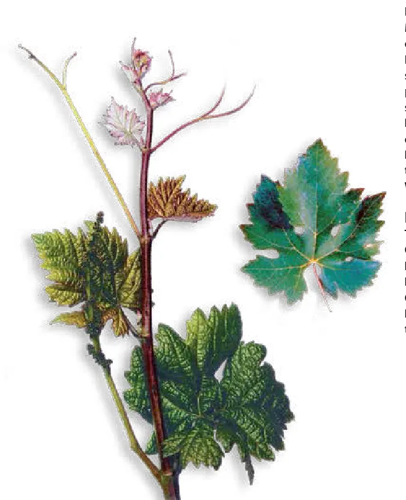
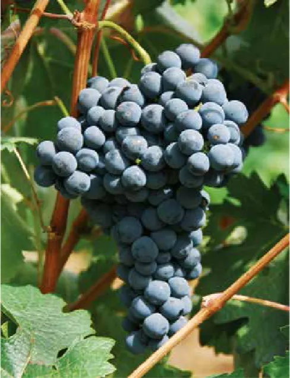

Chapter 3 · The Portuguese grape varieties
Aragonez (R)
Origin:
Spain, possibly Asturia. What is certain is that the monks from Cluny distributed this variety along the Caminho de Santiago. In Portugal, Gyrão (1822) knew of the existence of this variety in the Douro. Vila Maior presumed the variety was imported from Spain to the Quinta da Romaneira, although it was not yet referred to as Tinta Roriz, as it is widely known in this area today.
The wine described by Paulo Laureano: “This variety’s wines are distinguished by good, strong colour and an intense and complex aroma structure. At first, its gives aromas of plums and fruits of the forest, which develop into new complexes with ageing. Smooth in taste, the Aragonez wines possess a tartness, are well structured, tannin-rich and multi-layered. Any sampling will reveal the high quality of this wine for which it has earned its reputation.”
Chief areas of cultivation: Douro (4,000 ha), Spain (214,341 ha), France (2,500 ha), Argentina (12,000 ha), USA (250 ha), Australia (312 ha).
Morphology:
Young shoot (form of tip): Open with crimson red tip of medium intensity; medium to dense hairs.
Young leaf: Red stripes and green buds.
Young shoot (form of tip): Yellow with bronze shading, ventral side medium density of hairs and erect hairs.

Inflorescence (sex of flower): Hermaphrodite.
Mature leaf: Large, pentagonal, five lobes, with upper lobe dominant, blade medium green, regular, rugose with light blistering. Very erect hairs of medium density on lower side of blade. Large convex teeth, overlapping U-shaped petiolar sinus, and overlapping U-shaped upper lateral sinuses.
Bunch: Medium size, cylindrical to conical, medium density, peduncle of medium length.
Berry: Round, medium size, blue-black, skin of medium thickness, flesh of medium firmness.
Woody shoot: Brown-yellowish.
Phenology:
Time of bud burst: Medium season, 9 days after the Castelão.
Flowering: Medium season, 6 days after the Castelão.
Berry (colour change): Medium season, 2 days before the Castelão.
Berry (harvest ripe): Medium season, at the same time as the Castelão.
Vegetative and viticultural parameters:
Vigour: High.
Size (tropia): Semi-erect and horizontal (plagiotropic).
Fertility index: Medium, around 1.31 inflorescences per bud (Araújo, 1982).
Yield: Very high with long pruning. Index 519 (Araújo, 1982). 6,000–10,000 l/ha.
RNsV values: 2.94 kg/pl (average of at least 40 cultivars, recorded in Évora over 3 years).
Yield consistency (different years and locations):
Regular.
Homogeneity of production (between plants):
Homogeneous.
Winkler Index: 1,580 hours above 10 °C with a yield of 11 tonnes/ha (Montemor-o-Novo).
Recommended yield: 6,000 l/ha.
Abiotic sensitivity: To excess water in the soil.
Cryptogamic sensitivity: Slightly susceptible to mildew and powdery mildew; sensitive to grey rot, Esca and Eutypiasis.
Health status (systemic) before selection: 40% GLRaV3, 5% GLRaV 2+6, 10% GFkV, <50% RsPV.
Sensitivity to parasites: Not relevant.
Bunch size: Large, 360 g. Around 228 g (in 2006).
Bunch compactness: Not very compact, loose.
Berry: Large (around 2.5 g/bunch), difficult to detach.
Vineyard conduction system: Any type. Shoots at risk of breaking if tied.
Soil requirements: If possible, deep soils with good drainage, and limited availability of water. Too much water leads to delays in ripening and reduced quality.
Climatic requirements: Climate needs to be dry and very hot to achieve quality.
Vine density: Depends on crop load.
Rootstock: Choice of rootstock affects bud fertility and, indirectly, alcohol content. Recommended: 1103 P and 196-17 both of which result in high yields; R99 and R110;
Not recommended: Rupestris du Lot.
Incidence of coulure/millerandage: Flower susceptible if there is a sudden drop in temperature.
Spoilage of mature berries: Fairly minimal.
Risk of bird damage: Protection strongly recommended.
Oenological characteristics:
Potential alcohol content: High, 13%–14% vol. (RNSV statistical value: 13.28% vol.; average of at least 40 clones in Reguengos over 3 years).
Natural acidity of must: Medium to low (total acid content, 4–5 g/l; malic acid, 1.6 g/l; tartaric acid, 3.8 g/l). (RNSV statistical value: 2,86 g/l, average of at least 40 clones recorded in Reguengos over 3 years).
Total anthocyanins: 669.8 mg/l. (RNSV statistical value: 669.26 mg/l; average of at least 40 clones in Reguengos over 3 years).

Total phenols index (at 280 nm) of must: 43.9. (RNSV statistical value: 43.95; average of at least 40 clones in Reguengos over 3 years).
Risk of oxidation of must: Low.
Colour intensity of wine: High for must (8-14, depending on the clone). Risk of loss of intensity during fermentation
Wine colour tonality: 0.6 – 0.8, depending on the clone.
Tannins: Monomeric 10 mg/l; Oligomeric 100 mg/l; Polymeric 570 mg/l. Oligomeric procyanidins: B1, 11– 44,7 mg/l; B2, 7.7 – 21.0 mg/l; T2, 1–10 mg/l.
Total polyphenol index (at 280 nm): 19–75 (Total polyphenols: 1,712–2,729 mg/l).
Risk of oxidation of wine: Low, when alcohol content is high.
Aromatic profile: Total terpenoid compounds (Analysis, Alentejo in 1997 and 1998), 202 μg/l (1997), 199 μg/l (1998). Total benzenoids, 1,034 μg/l (1997), 588 μg/l (1998). Norisoprenoids, 821 μg/l (1997), 363 μg/l (1998).
Ageing potential: High. Well suited to ageing in wooden barrels.
Blending recommendation: Touriga Nacional, Touriga Franca, Tinta Barroca, Tinto Cão, Trincadeira, Alicante Bouschet.